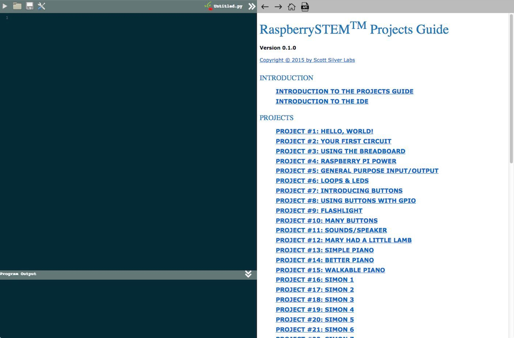
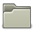
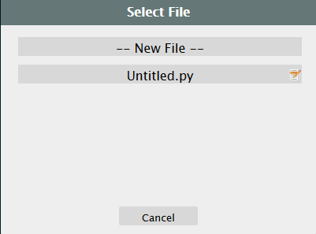
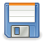
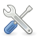
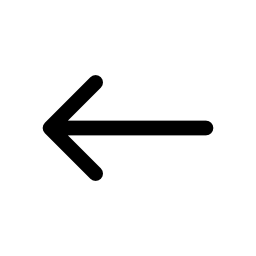
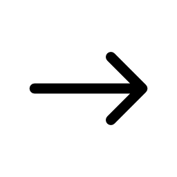
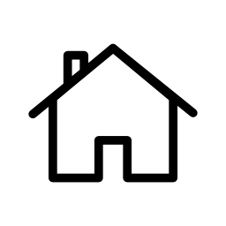
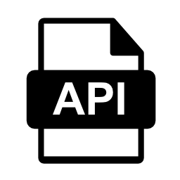

If you’re reading this, you’ve successfully built your RaspberrySTEM CREATOR Kit, connected it to the monitor and loaded your RaspberrySTEM Development Environment (RDE). You’re now ready to get started with the projects!
Here is (generally) what your RDE should look like:

The first thing you’ll likely notice is that the screen is split down the middle, with the left side in blue and the right side in white (you’re probably reading this on the right-hand side of the screen right now). The left (blue) side is also split into two pieces.
Below, we’ll discuss each of these sections of the RDE and how they work.
The Code Window is the area in the upper-left portion of the screen:
At the top left side of the window are four clickable icons. To the right of those icons is the name of the file you're editing. Below the icons is the area where you write and edit your code.
The four clickable icons are:
 |
This is the “Play” icon. When you click this icon, your code will execute (also called "running your code"). |
|  |
This is the “File” icon. When you click this icon, a list of files will pop up so that you can get back to code you have previously saved. The popup will look like this:  From this menu you can do three things:
|
|  |
This is the “Save” icon. When you click this icon, your code will be saved under the current file name. If you’d like to change the name of the file, use the “File” icon mentioned above. |
|  |
This is the “Settings” icon. When you click this icon, you will be prompted to change various settings or to shut down the RDE. |
Note that by clicking the two arrows to the right of the filename, you can expand or collapse this window.
Here is the window you should see in the lower-left portion of the screen:

This is called the Output Window. It is where your program will display information about the program status.
For example, you may tell your program to print something to this area. Or, if your program has an error, the error would be displayed in this area. This area will also indicate if your program has finished running or you have stopped it.
On the right-hand side of the screen, you should see a window that resembles this:

This is the Projects & Documentation Window, and it consists of two parts:
Navigation Menu
The Icon Menu consists of four clickable navigation icons, each of which serves a specific function. Let’s look at the four icons individually:
|  |
Clicking the “Back” arrow will step you back through your viewing history. |
|  |
Clicking the “Forward” arrow will step you forward through your viewing history (if you had previously stepped backwards). |
|  |
The “Home” icon will take you to the home page list of all the projects (as seen in the example). |
|  |
The “API” icon will take you to the list of custom APIs (we'll discuss what that is later) available as part of the RaspberrySTEM. |
Projects & Documentation
Below the Navigation Menu is the view of the projects and documentation available as part of the RaspberrySTEM platform. Any parts of the documentation that are underlined in blue are clickable hyperlinks that will take you to other parts of the documentation or projects.
Now that you have a basic overview of the RDE, it’s time to write and run your first program. We call this Project #1, and like all the RaspberrySTEM Projects, it’s available in the Projects & Documentation Window.
To start working on Project #1, click the next link below...